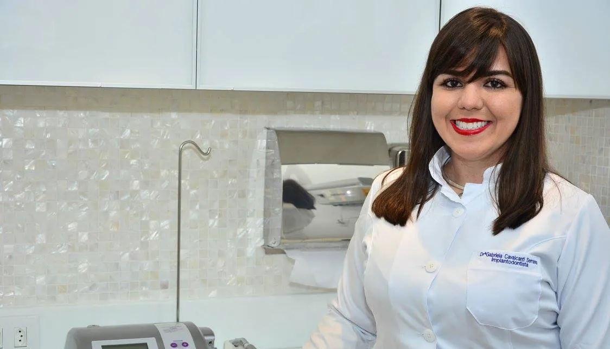

A especialidade da Dra. Gabriela
Implantes e reabilitação oral
A melhor opção para repor um, alguns ou até todos os dentes. Os implantes de titânio substituem as raízes perdidas e recebem próteses fixas ou móveis, devolvendo a mastigação e a beleza do sorriso.
- Protocolo: prótese fixa sobre 4 a 8 implantes, que recupera cerca de 85% da mastigação.
- Overdenture: prótese móvel presa sobre 2 a 4 implantes, mais firme e fácil de higienizar.
- Cirurgia guiada: implantes sem cortes, planejados na tomografia digital.
- Carga imediata: quando o osso permite, o dente provisório já sai instalado.
“Essa querida achou que jamais poderia fazer tratamento de implantes, por ser diabética. Com avaliação, planejamento e os cuidados necessários, o tratamento foi possível e este sonho realizado.”
Instagram da clínica, agosto de 2026